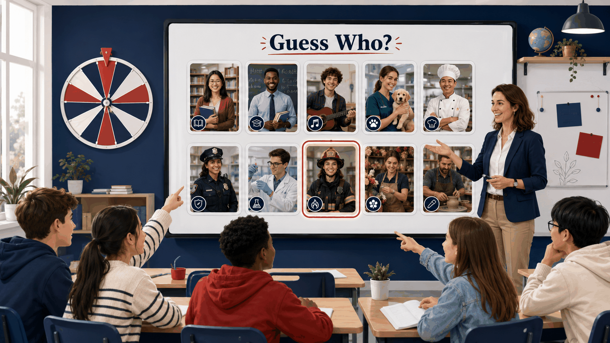

01
Grammar Workshop: Adjectives vs. Manner Adverbs
Practice describing what people are like and how they behave in different situations.
Open activityIntermediate English Course 1
Practice Lab is organized by unit so each game, reading, listening, workshop, and speaking activity stays connected to the course topic it supports.
Practice dashboard
Open each folder to find the practice activities connected to that unit.
Personality, behavior, stereotypes, descriptions, labels, and cautious language.
Practice describing what people are like and how they behave in different situations.
Open activity
Use personality adjectives, behavior descriptions, and classroom interaction to guess characters respectfully.
Open activity
Explain what people are believed to be like, how they usually behave, and why generalizations can be incomplete.
Open activity
Create an original character, describe personality traits and habits, and compare powers.
Open activity
Listen to a superhero story about stereotypes, first impressions, and looking beyond labels.
Open activity
Continue the story with a reading about names, rumors, and the real stories behind quick labels.
Open activity
Reuse the roulette-based classroom game with profession portraits, yes/no questions, and vocabulary support.
Open activity
Investigate a burglary scene, interview an eyewitness, describe suspects, and summarize the case cautiously.
Open activityPersonal goals, support, timelines, recent life events, and detailed conversations.
Insert students' wishes, hopes, or dreams and find partners based on similar goals or possible support.
Open activity
Prepare a written timeline of recent life events before a partner conversation.
Open activity
Listen to a two-voice American English conversation about reconnecting and ordering life events.
Open activitySuperlatives, famous places, measurement language, opinions, and justifications.

Choose from five image walls, answer superlative questions, compare famous places, and justify opinions.
Open activity
Choose a human or natural wonder, prepare a 2–4 minute oral presentation with superlatives, facts, and a recommendation, then vote as a class.
Open activity